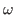
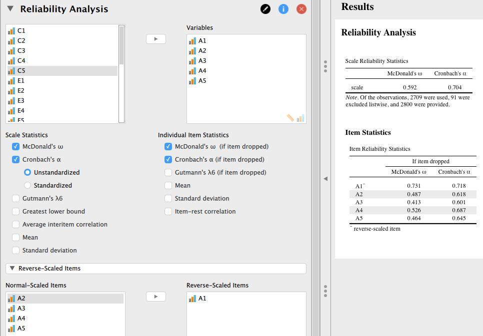

Next: カウントデータの分析 Up: JASPについて Previous: 因子分析
因子分析で用いたのと同じ、BFI Network データをここでも使うことにする。 A1-A5, C1-C5, E1-E5, N1-N5, O1-O5 まで5項目ずつ5因子からなる尺度であることを前提として、各下位尺度で信頼性を評価することにしよう。
分析メニューの [Descriptives] から [Reliability Analysis] を選択する。 左のボックスから、A1-A5 までを右に移動させよう。 デフォルトでは、マクドナルドの  係数のみが算出されるのだが、[Scale Statistics] の [Cronbach's ] にチェックを入れることで、 係数が算出される。
注意しなくてはいけないのは、A1 は逆転項目だということである。 これを処理するには、[Reverse-Scaled Items] で該当する項目を右側のボックスに移動させる必要がある。
さらに、[Individual Item Statistics] にチェックを入れると、各項目を下位尺度から取り除いた場合に信頼性がどのように変化するかが表示される。

Taichi Okumura